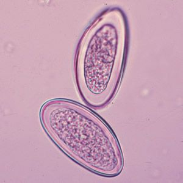
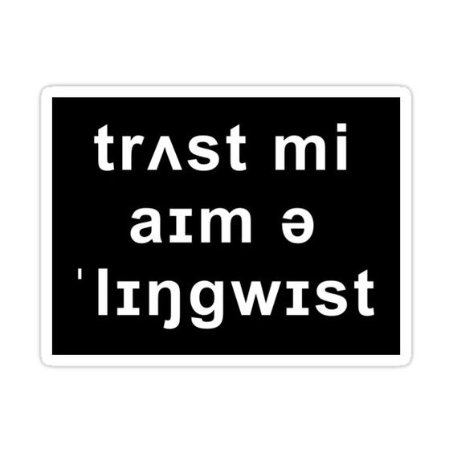
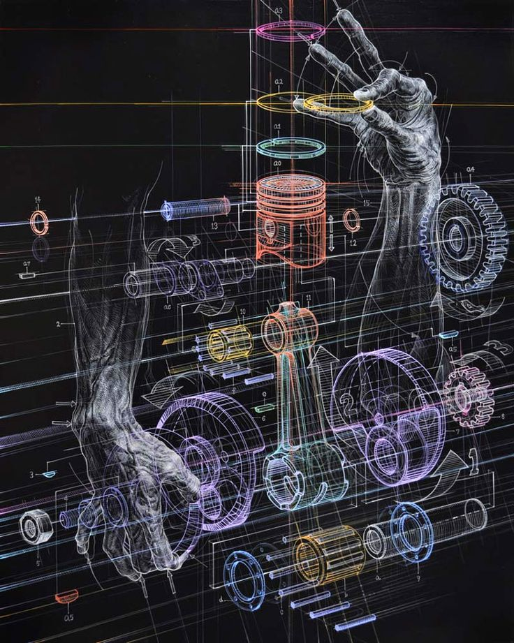

Szociológiai kar - előadás
Szeretettel ajánljuk a szociológia kar idei előadását mindenkinek akit érdekelnek az aktuális problémák...
Jogtudományi kar - előadás
Az Állam és jogtudományi kar idei prezentációs témájának az adó-, és pénzügyi jogot...
Természettudományi kar - előadás
A mikrobiológia szerelmeseit várjuk idén is egy elképesztő előadásra ahol idén a díjnyertes...
Anglisztika - előadás
Ha beszélsz angolul ez az előadás ideális lehet igazi angolszász nyelvjárások megismerésére...
Mérnökinformatika - előadás
A Technológia folyamatosan fejlődő világában érdemes lehet megpróbálni lépésttartani...
Fizika tanszék - előadás
Mindig is érdekelt téged a Fizika? A tanszék ideji PhD esélyes kutatói most egy előadással készülnek mindazoknak...